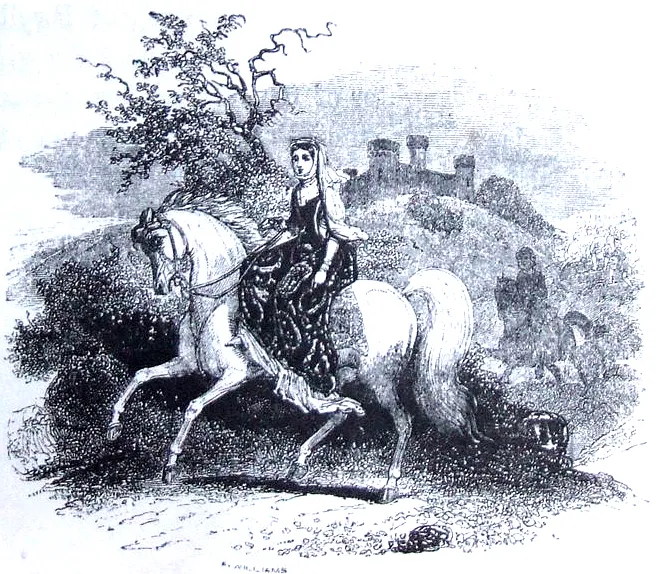

리아논, 말의 여신…?

웨일스의 «마비노기Mabinogi»에 등장하는 리아논Rhiannon에게 자연의 여신, 말과 새의 여신, 드루이드의 여신 같은 칭호를 부여하면서, 심지어는 갈리아의 에포나Epona와 동일한 존재로 결부하는…
이런 시선이 현대에는 아주아주 흔하지만, 사실 근거는 미약합니다. 개인적으로도 선호하지 않고요.
리아논이 유의미한 역할을 수행하는 문헌은 «마비노기»의 제1가지와 제3가지뿐입니다.
그밖에는 «킬후흐와 올웬Culhwch ac Olwen»에 “리아논의 새”가 딱 한 번 언급되며, 웨일스 삼언시Trioedd에도 이름만 살짝 언급됩니다.
이게 전부인 인물에게 무엇의 여신이라든지, 무슨 권능으로 드루이드한테 숭배받았다든지, 이런 서사를 붙이기에는 문헌적 근거가 너무나도 부족합니다.
심지어 에포나는 리아논보다 더 심각합니다. 과장을 아주 살짝 덧붙여서 단언하자면, 우리가 에포나에 대하여 아는 것은 이름뿐입니다.
“켈트 판테온”이라는 이름을 붙여 리아논이니 에포나니 하는 인물을 끼워넣기에 우리는 너무 아는 것이 적습니다.
그냥 말 위에 앉은 에포나 도상이 발견됐다는 이유로 “에포나는 말의 여신!” 이라고 말하거나1,
«마비노기»에서 리아논이 말을 타고 등장한다는 이유로 “리아논은 말의 여신!” 이라고 말하고,
심지어 “따라서 에포나와 리아논은 동일한 존재!” 라고 주장하기에는 지나치게 비약이 심하다고 말하고 싶습니다.
로마 시대부터 이어져 온 켈트 문화에 대한 타자화, 대상화, 낭만화가 얽힌 문제라서 솔직히 그다지 편하지는 않은 시선입니다만,
뭐… 현대 창작물에서 그냥 즐기고 싶어서 차용하는 것이라면야 켈트인 당사자도 아닌 저한테 뭐라 할 권리는 없겠죠.
다만 지나치게 낭만화된 추상적 이미지를 재생산하고 소비하는 데에서 멈추기보다는, 이왕이면 «마비노기온Mabinogion»이나 «쿠알녜의 소 도적Táin Bó Cuailnge» 같은 실제 켈트인이 쓴 켈트 고전 문학을 더 많이 즐기는 세상이 되었으면 하는 개인적인 희망이 있습니다.
+ 참고로 맨 위의 삽화는 1877년 «마비노기온»에 실린 것인데요, 리아논이 말을 옆으로 타고 있습니다.
그러나 같은 책에서 저자 샬럿 게스트도 지적하였듯 중세 초기까지도 여성이 남성과 같은 자세로 승마하는 것이 일반적이었을 것으로 보입니다. 이 삽화 자체가 근대의 상상이 투영되었다는 뜻이죠.
당장 같은 책 «마비노기온»에 실린 기사도풍 로망 «게라인트와 에니드Geraint ac Enid»에도 에니드가 말을 타려고 승마복을 따로 챙겨입는 묘사가 나옵니다.
- 1사실 이것보다는 많은 근거가 있지만, 단정하기에 지나치게 단편적이라는 지적은 변치 않습니다.